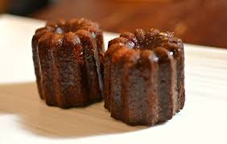

Recette pour 12 canelés Lunch - Taille Moyenne

Ingrédients
- 1/4 litre de lait
- 1 gousse de vanille
- 125 g de sucre
- 65 g de farine
- 3 jaunes d’œufs
- 25 g de beurre
- 25 ml de rhum
Préparation
La veille
- Faire bouillir le lait et laisser infuser les gousses de vanille
- Mélanger le sucre et la farine
- Ajouter les jaunes d’œufs et mélanger
- Mélanger le lait vanillé à cette préparation
- Y incorporer le beurre et le rhum
- Laisser reposer au frais
Le lendemain
- Préchauffer le four thermostat 7 (220 °C)
- Bien mélanger la préparation
- Essuyer et regraisser les moules avec du beurre (ou de la matière végétale)
- Les poser sur une plaque
- Couler la pâte liquide dans les moules (3/4 du moule, la pâte lève un peu lors de la cuisson)
- Laisser cuire environ 1 heure : 1/4 heure à 220 °C et 3/4 heure à 160 °C
- Démouler à chaud et laisser refroidir